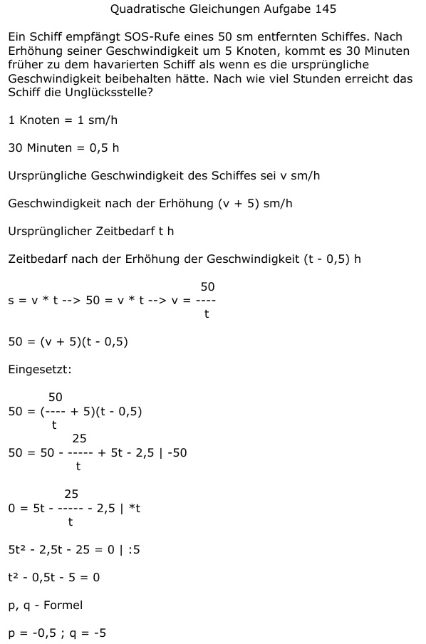

Aufgabe 145 Ein Schiff empfängt SOS-Rufe eines 50 sm entfernten Schiffes. Nach Erhöhung seiner Geschwindigkeit um 5 Knoten, kommt es 30 Minuten früher zu dem havarierten Schiff als wenn es die ursprüngliche Geschwindigkeit beibehalten hätte. Nach wie viel Stunden erreicht das Schiff die Unglücksstelle? 1 Knoten = 1 sm/h 30 Minuten = 0,5 h Ursprüngliche Geschwindigkeit des Schiffes sei v sm/h Geschwindigkeit nach der Erhöhung (v + 5) sm/h Ursprünglicher Zeitbedarf t h Zeitbedarf nach der Erhöhung der Geschwindigkeit (t - 0,5) h 50 s = v * t --> 50 = v * t --> v = ---- t 50 = (v + 5)(t - 0,5) Eingesetzt: 50 50 = (---- + 5)(t - 0,5) t 25 50 = 50 - ---- + 5t - 2,5 |-50 t 25 0 = 5t - ---- - 2,5 |*t t 5t2 - 2,5t - 25 = 0 |:5 t2 - 0,5t - 5 = 0 p, q - Formel p = -0,5 ; q = -5  t1,2 = 0,25 ± 2,25 t1 = 0,25 + 2,25 = 2,5 h t2 = 0,15 - 2,25 = -2 keine Lösung, negative Zeit